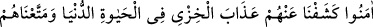
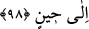

YUNUS (A.S.)’IN KAVMİ
98. “Keşke bir ülke halkı îmân etseydi de îmânı kendilerine fayda verseydi.
Yalnız Yunus’un kavmi müstesnâ. Onlar îmân edince kendilerinden dünya
hayatında rezillik azabını kaldırmış ve onları bir süre daha faydalandırmıştık.”
“Keşke” helak edilen ülkelerden “bir ülke halkı” azabı gözleriyle görmezden önce
“îmân etseydi de” Fir’avn ve kavminin geciktirdiği gibi îmânını, azabı müşâhede etme
vaktine bırakmasaydı da “îmânı” Allah’ın kabul edip bu îmân sayesinde onlardan azabı
kaldırması sûretiyle “kendilerine fayda verseydi.”
“Yalnız Yunus’un kavmi müstesnâ” Yunus (a.s.)’ın babasının adı Metta’dır. Bazıları
ise Metta’nın Yunus’un annesinin adı olduğunu ve Yunus ile İsa (aleyhime’s-selam)’dan
başka kimsenin annesinin adıyla meşhur olmadığını söylerler.
“Onlar” azabın başlarına gelmesini beklemeden emaresini görür görmez “îmân
edince kendilerinden dünya hayatında rezillik azabını” yani sahibini rezil ve rüsvay
eden zilleti ve hakirliği “kaldırmıştık.”
Bu ifade onların azaba uğradıklarını değil, bilakis yaklaşan azâbın gölgesinin
üzerlerine düştüğünü gösterir. Nitekim Cenab-ı Hak: “Siz ateş çukurunun kenarında
iken sizi ateşten kurtardı.” (Âl-i İmran, 3/103) buyurur. Bu kurtarma, onlar ateş
çukuruna düştüklerinde değil düşmek üzereyken meydana gelmiştir. Nitekim et-
Teysir’de böyle geçmektedir.
Yûnus kavminin îmânı, kendilerine fayda vermiştir, çünkü bunların îmânı yeis halinde
değil, mükellefiyetleri hâlâ devam ederken, tercih vaktinde gerçekleşmişti.
“Ve” üzerlerinden azabı kaldırdıktan sonra “onları” Allah’ın ilminde kendileri için
takdir edilmiş “bir süre daha” dünya metaı vererek “faydalandırmıştık.”
Âyette sanki şöyle denilmiş oluyor: “Helak olmak üzere olan ülkelerden hiçbirinin
ahalisi inanıp da bu îmân kendilerine fayda vermemiştir, yalnız Yunus’un kavmi
müstesnâ.” Âyetin “Onlar îmân edince..” diye başlayan kısmı, onların îmânının
kendilerine fayda verdiğini beyan etmek için yeni başlayan bir cümledir. Burada ayrıca
makbul îmânın kalben yapılan îmân olduğuna da işâret edilmektedir.
Mesnevî’de şöyle denilir:
Görünmeyene ibadet etmek, kulluk etmek güzeldir.